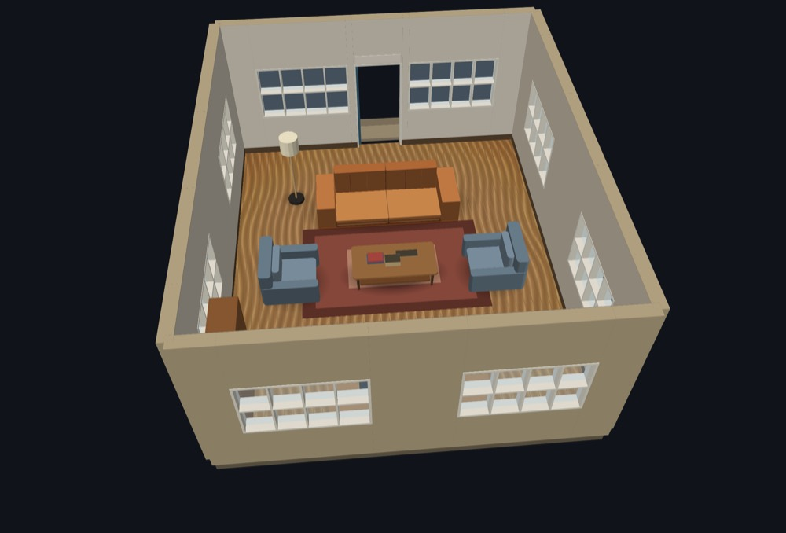
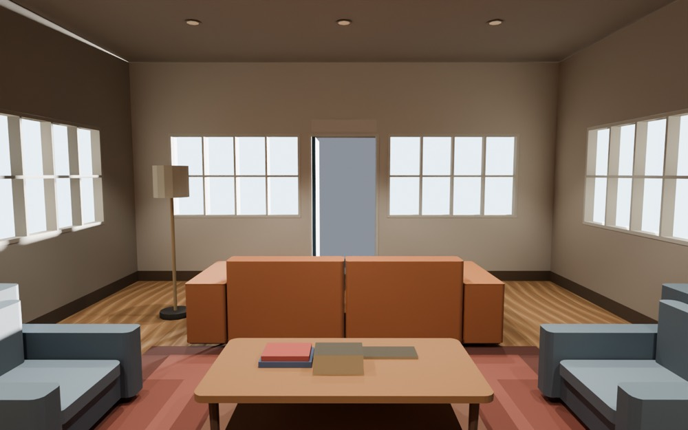
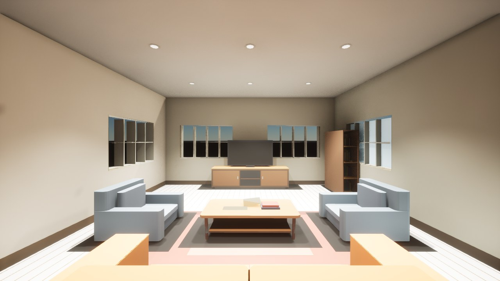
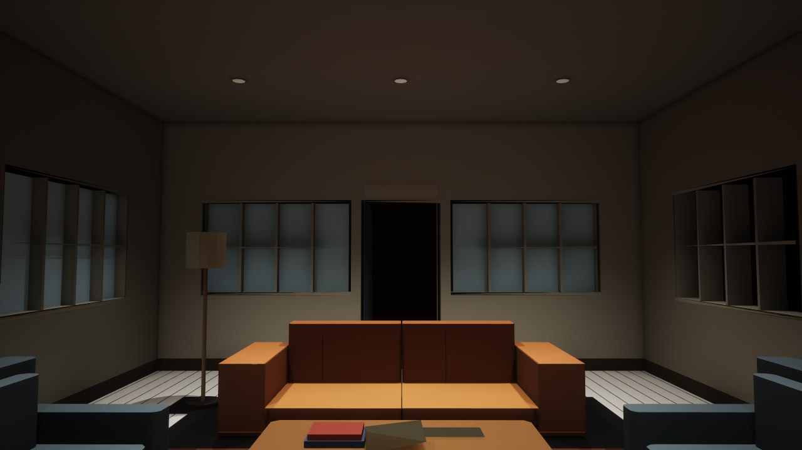
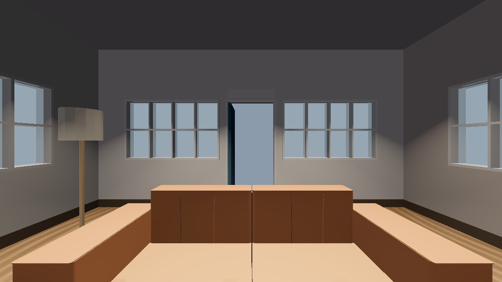
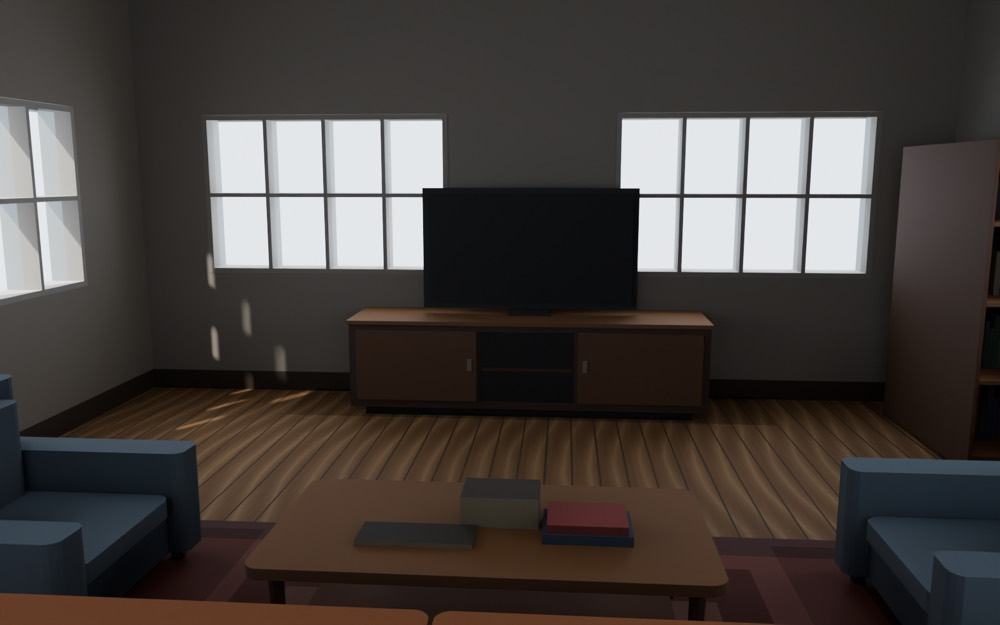
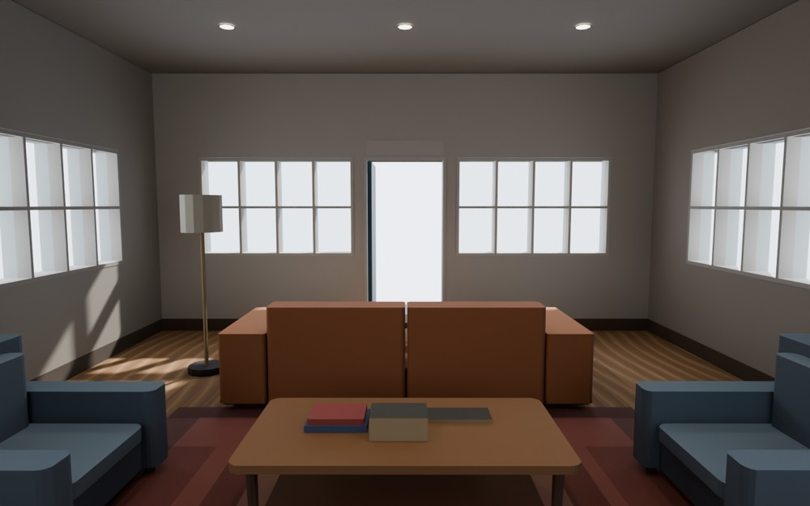
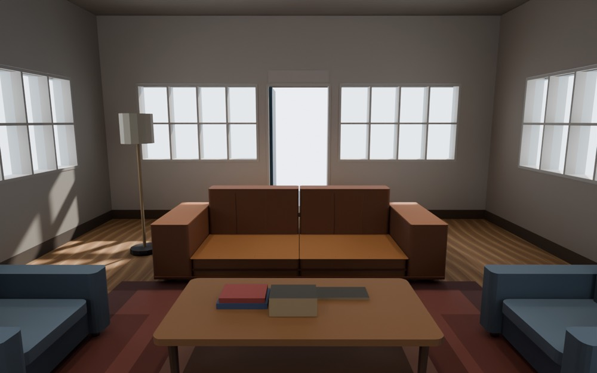
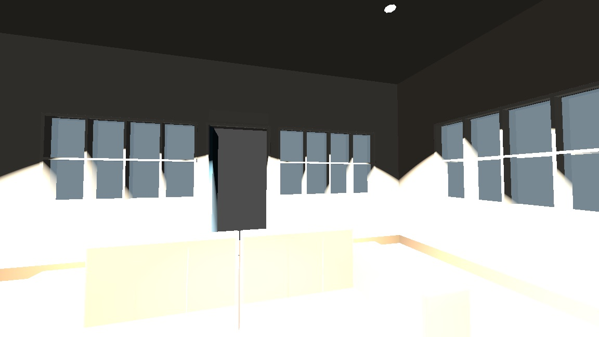

The Lounge Handoff
Mojulo is a 3D factory for agents: an agent builds worlds, objects and games by conversation, as editable recipes on your own machine, that ship as a game or as a printed object. This page follows one real room, ref sk_lkypzdim4y, from a twelve-line recipe to a lit Cycles frame, a life-size Unreal level and a walkable Godot project, then through three edits, using nothing but the files the pipeline itself wrote.
Everything starts as a small, editable recipe
The manifest is the artifact. This is the entire room, stored as one row, and nothing below it is authored by hand: walls, windows, the door, the furniture, the light and every exported file are regenerated from these lines on every read. Seeded dice only, no clock, so the same recipe gives the same bytes, and a kernel's output for these lines is a compatibility promise the tests hold it to.
{
"title": "One-room house plan — living",
"kind": "floorplan",
"width": 24, "height": 28,
"rooms": [{ "x": 2, "y": 2, "w": 20, "h": 24, "glyph": "L" }],
"doors": [{ "x": 12, "y": 26, "room": 0, "edge": "S" }],
"furnish": true,
"view": "cutaway",
"seed": 7,
"potLights": true
}
The unit is feet, because house plans are drawn in feet. The kind knows that, and every export downstream scales by 0.3048 so an engine walker sees the room at life size. A 10 ft ceiling arrives in Unreal as 3.05 m.
The kernel turns the recipe into a world
This part is mojulo's own, and it is where the room actually lives. A structurizer builds walls and cuts openings from the cells and the door. An arranger reads the glyph L and lays out a living room: media unit on the far wall, sofa across from it, coffee table, two club chairs, a rug, a floor lamp. A realism pass adds oak boards with real grain, contact shadows under each piece, a ceiling in the walkable tier, and the pot lights.

"3D" is a pipeline-position claim, never a fidelity claim. Mojulo authors truth at home; the edge tool consumes it. Never a fidelity rival, never just an exporter.
One export, three files, every engine
One recipe leaves through many doors: Godot, Unity and Unreal packs, Blender, plain glTF, and STL, 3MF and USD for the print and DCC sides. This page follows the engine door. An export writes the world as a standard glTF binary plus a small engine score, and wraps them with an importer script and a guide. No engine-specific geometry is authored anywhere; the lights, the glowing lenses and the unit scale travel inside the glTF as standard extensions the importers already understand.
model.glb
- size
- 694 KB · 26 nodes · 10,694 triangles
- materials
- 16, real PBR when exported lit; the lens is emissive
- lights
- 9 spots, 400 candela, 30°/50° cones, via KHR_lights_punctual
- root
- uniform scale 0.3048, so importers receive metres
- texture
- the oak floor, embedded as its albedo
score.json
"units": "1 mojulo unit = 1 meter",
"metersPerUnit": 0.3048,
"spawn": [3.658, 4.267, 1.280],
"eye": 1.280,
"lights": [ { "type": "spot", "position": [2.134, 2.334, 3.018],
"intensity": 400, "color": [1, 0.93, 0.82], … } × 9 ],
"ledger": { "lights_carried": { "count": 9 },
"textures_carried": { "count": 1 },
"sky_approximated": …, "cameras_data_only": … }
The ledger is the honest half of every handoff: it lists what did not travel. Here the sky dome is dropped and approximated with the engine's own sky, and the two authored camera framings ride as data only. Nothing is silently lost.
The same recipe, seen by each renderer
Blender · Cycles
The Blender driver imports the lit glTF, adds a sun and sky or a studio rig, and keeps the frame. Its importer reads the nine spots and the emissive lens on its own.
Unreal 5.8
A headless editor imports the pack, builds the level, spawns the walker's start, and a verify pass checks seven facts. Interchange imported all nine lights itself. Two Level Sequences were then rendered from that same level by the engine's stock capture, below.
Godot 4.7
Imports the KHR lights itself; the pack's own kernel now reads them as candela. Headless import, a one-frame run and a materials probe passed, then the room was walked. The first walk found a white room, which became the third edit below.
Unity 6
Same pack shape, with a walker that scales to the score's eye height. Six verify checks and the materials probe pass, fourteen shaded and two unlit as the file declares. Nobody has looked at it in the editor, so no claim about how it reads.


The Unreal machine gate, verbatim
- scene_exists — /Game/MojuloPack/Maps/mojulo-level
- world_instance — 34 actors
- collider_count — 0 vs 0
- spawn_marker — x 365.76, y −426.72, z 96.00 cm
- ground_plane
- lights_carried — 9 local lights vs 9 in the score
- materials_unlit — 16 of 16 static-mesh slots
The spawn marker is the unit fix made visible: 12 ft and 14 ft became 3.66 m and 4.27 m, and the marker sits a capsule's half-height above the floor. Before the fix the same room landed at 3.28× life size, a 10 m ceiling over a 1.8 m character. A review of the assembled repository later caught the other half: the eye was 4.2 ft, a child's, and the spawn carried the eye height as its z. The eye is now 5.3 ft and the spawn is the feet on the floor. The machine gate could not see that; a person opening the level could. Gates advise and stamp, none of them refuse, and the pipeline keeps the two kinds separate on purpose.


Those two slabs are one finding. The glTF declares two materials as unlit and alpha-blended, the contact-shadow stickers and the panes, and the Unreal importer swaps every one of the sixteen slots onto its opaque lit master. The gate line materials_unlit — 16 of 16 is the machine confirming the swap; it cannot say that two of the sixteen should have kept their blend mode. Godot's importer keeps them, which is why its gate reports fourteen shaded and two unlit. The floor is the same class: the pack carries it as two coplanar layers, the plank base coat and the oak texture over it, and Unreal draws the base coat. Neither is a recipe knob; both are importer contracts the Unreal leg does not have yet, the same shape as the Godot candela finding.

The Godot machine gate, verbatim
- import ×2 — exit 0, .godot present
- one_frame main — exit 0, no script errors
- surfaces_built — 16 of 16
- unlit_as_declared — 2 of 2
- shaded_as_declared — 14 of 14
- lights_as_declared — 9 of 9
- locomotion_probe — skipped, a world carries no player row
This gate also passed on kernel 0.2.0, when the same frame was solid white. It measures whether the importer built what the file declares: surfaces, shading, light count. It cannot see exposure. A person pressing play could, in one second.
In motion
Five representation videos, none of them a game: the web tier orbiting and flying through the cutaway, Godot walking the lit pack, and Unreal walking it and then turning the day off. Each is a recipe or a frame-indexed script in videos/, so a re-run gives the same frames.
The Unreal shots are authored by videos/unreal-cine.py under the editor's Python commandlet, which needs no renderer, and rendered by a -game launch with -MovieSceneCaptureType: the sequence, the frame rate and the output folder on the command line, PNG frames out, ffmpeg after. The walkthrough rendered its 420 frames in forty seconds. The authoring log and one capture log are in gates/, verbatim.
Two kinds of edit, one regeneration
Because the room is a recipe, changing it never means re-modelling. There are two places an edit can land, and both regenerate everything downstream, then re-run the gates.
Edit the recipe: add the pot lights
The operator asked for ceiling lights. That is one field on the recipe. The kernel lays a 3 × 3 grid per room, six feet apart, inset from the walls, and everything below picks it up: cans and pools in the web tier, spots and emissive lenses in the glTF, a lights block on the score, nine actors in Unreal.
"furnish": true, "view": "cutaway", "seed": 7,- }+ "potLights": true+ }


Fix the kernel: turn the couch to the television
The sofa faced the door. That was not a recipe choice, it was a kernel bug, and the recipe does not change at all. The arranger had never given the sofa a facing, and the couch was the one furniture asset built in world space, so the facing would have been ignored anyway. Two lines in the kernel, and every lounge in every floorplan re-renders seated toward the screen. The legacy characterization hashes changed and were re-pinned with a dated note, which is the one place a kernel fix has to declare itself.
// floorplan-glyphs.js · arrangeLiving- { type: 'sofa', asset: 'modern-couch', anchor: [j(0.5, 0.04), 0.72], … },+ { type: 'sofa', asset: 'modern-couch', anchor: [j(0.5, 0.04), 0.72], …, facing: 'S' }, // room-assets.js · the modern-couch maker- buildModernCouchWorkbenchManifest({ x: cx, y: cy, z: base[0][2], w, d, h }) // world space, ignores the corner spin+ local: true,+ buildModernCouchWorkbenchManifest({ x: 0, y: 0, z: 0, w, d, h }) // local frame, mapped through the footprint like every other piece


Fix the kernel: teach the Godot leg what a candela is
The first walk in Godot was a white room. The glTF says 400 candela per spot, which is a real downlight; Unreal reads candela through its exposure and Blender converts it to watts, but Godot's importer copies the number straight into a unitless lamp energy where 1.0 is normal, leaves the range at its 4096 m default, and the pack shipped no environment or tonemapper to catch it. Four hundred times too bright. Not a recipe knob and not a taste question: a unit contract the Godot leg never had. The fix lives in the pack's own kernel, next to the material fixup that already runs after import, and only for worlds that carry lights, because a tonemapper would also remap the unlit packs whose reference look is the web build.
// kernel/level.gd · _ready _fix_materials()+ if _fix_lights() > 0:+ _build_environment() // kernel/level.gd · the importer's number is candela, Godot's is a lamp+ const CANDELA_PER_ENERGY := 50.0 // read against the Cycles frame of this room+ l.light_energy = l.light_energy / CANDELA_PER_ENERGY+ if l is SpotLight3D and l.spot_range > 1000.0: l.spot_range = 12.0+ env.tonemap_mode = Environment.TONE_MAPPER_AGX // kernel/VERSION- 0.2.0+ 0.2.1


The operator owns the recipe. The maintainer owns the kernel. Neither ever touches an export by hand, and the gates run the same way for both.
Claims this room supports, and claims it does not
Supported, with a machine behind it
- A recipe edit propagates deterministically to every handoff. The full suite passes with pins for the cans, the pools, the glTF lights, the emissive lens, the root scale and the scaled score, all landed in commit 14c3197.
- Unreal 5.8 accepts all of it through its stock importer. Seven of seven checks, nine of nine lights, spawn in metres. No mojulo code runs inside the engine.
- Godot 4.7 walks the room from its stock importer plus the pack's own kernel: import, one-frame run and materials probe clean, nine of nine lights. The kernel converts candela to the engine's unit; the engine does the rest.
- The glTF is a faithful carrier: lights, emissive materials and units travel in standard extensions, and the reader undoes the unit scale so a bake or a Blender round trip comes back in the world's own units.
- One recipe field adds lights that show up as geometry in the browser, as light sources in Blender, and as spot lights in Unreal, with no per-engine authoring.
Held back, honestly
- Unity passes its machine gate but nobody has opened this room in it, so no in-engine claim, and whether it reads the spots' candela at a sane brightness is unjudged.
- The Godot kernel fix is in the working tree, not yet committed. Its divisor of fifty was calibrated against one room and one pair of eyes; other lit worlds may want the knob.
- A review of the assembled repository found this room carrying two manifest hashes, because the floorplan mint stored its quality grade inside the recipe and a stale grade was written back. The grade is no longer stored, and every pack now cites one hash,
fc95e0c38dd696a1. - The web-tier pools are proven numerically, brighter under a can than at the wall; no one has judged them by eye.
- The Blender GI bake exports faces only, so a baked lounge does not carry the pots yet.
- 400 candela is a real downlight, which means daylight swamps it in the Cycles day frame. That part is still taste, and still a knob.
- Walking the room is export, then run: two commands, not one.
- In Unreal the contact-shadow stickers draw as grey slabs and the oak floor reads white. Both are importer contracts the Unreal leg lacks, seen only in rendered frames; the mojulo-side fix is not in this repository.
- The day-to-night shot keys an exposure bias down 2.5 EV. That is the camera operator's choice, disclosed in the script, not a property of the pack or the lights.
Two gates, never conflated: a machine measures the handoff, a person judges the picture. The machine gate ran clean on every export of this room. What the eyes found: the black sky, the scale, the dead lens, the couch, a white room in Godot, and in Unreal's own frames the contact shadows drawn as slabs.